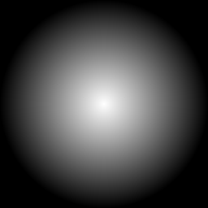

Create a Gradual Blend of Two Colors
An image gradient creates a gradual blend between two colors formed into a shape that is linear, circular, or ellipical.
For a linear gradient, the operator is either:
gradient: gradient:fromColor gradient:fromColor-toColor
The default fromcolor is white and the toColor is black unless overridden, e.g., gradient:gray returns a gradient from gray to black.
The for a radial gradient, the operator is either:
radial-gradient: radial-gradient:fromColor-toColor
The default for a linear gradient has fromColor at the top of the image and toColor at the bottom of the image. Similarly, the default for a radial gradient has fromColor at the center of the image and toColor at the boundary of the image.
Gradient colors may be any valid color defined per ../www/color.html. The named colors of black/white/grayXX and gray(XX[%]) are non-linear gray. For Linux systems, enclose rgb(a) and hex colors in quotes. Use double quotes, if using variables for the values.
Here is an example linear (as opposed to radial) gradient:
magick -size 256x256 gradient: linear_gradient.png magick -size 256x256 gradient:white-black linear_gradient.png

If you want a radial gradient, try:
magick -size 256x256 radial-gradient: radial_gradient.png magick -size 256x256 radial-gradient:white-black radial_gradient.png

If you want non-linear grayscale gradients, then add -colorspace RGB -colorspace gray before saving the output. For example:
magick -size 256x256 gradient: linear_gradient.png magick -size 256x256 gradient:white-black -colorspace RGB -colorspace gray linear_linear_gradient.png
magick -size 256x256 radial-gradient: radial_gradient.png magick -size 256x256 radial-gradient:white-black -colorspace RGB -colorspace gray linea_radial_gradient.png
Gradients are affected by these defines:
| -define gradient:vector=x1,y1, x2,y2 | Specifies the direction of the linear gradient going from vector1 (x1,y1) to vector2 (x2,y2). fromColor is located at vector position x1,y1 and toColor is located at vector position x2,y2. |
| -define gradient:center=x,y | Specifies the coordinates of the center point for the radial gradient. The default is the center of the image. |
| -define gradient:radii=x,y | Specifies the x and y radii of the gradient. If the x radius and the y radius are equal, the shape of the radial gradient will be a circle. If they differ, then the shape will be an ellipse. The default values are the maximum of the half width and half height of the image. |
| -define gradient:angle=angle in degrees | For a linear gradient, this specifies the direction of the gradient going from fromColor to toColor in a clockwise positive manner relative to north (up). For a radial gradient, this specifies the rotation of the gradient in a clockwise positive manner from its normal X-Y orientation. |
| -define gradient:bounding-box=widthxheight+x+y | Limits the gradient to a larger or smaller region than the image dimensions. If the region defined by the bounding box is smaller than the image, fromColor is the color of the background. |
We also support two convenience defines for setting the linear gradient direction and the radial gradient shape.
| -define gradient:direction={NorthWest, North, Northeast, West, East, SouthWest, South, SouthEast} | Specifies the direction of the linear gradient towards the top/bottom/left/right or diagonal corners. |
| -define gradient:extent={Circle, Diagonal, Ellipse, Maximum, Minimum} | Specifies the shape of an image centered radial gradient. Circle and Maximum draw a circular radial gradient even for rectangular shaped images of radius equal to the larger of the half-width and half-height of the image. The Circle and Maximum options are both equivalent to the default radial gradient. The Minimum option draws a circular radial gradient even for rectangular shaped images of radius equal to the smaller of the half-width and half-height of the image. The Diagonal option draws a circular radial gradient even for rectangular shaped images of radius equal to the half-diagonal of the image. The Ellipse options draws an elliptical radial gradient for rectangular shaped images of radii equal to half the width and half the height of the image. |
Examples
The default linear gradient may also be generated in any of the following ways (or by reversing the direction and swapping fromColor and toColor):
magick -size 256x128 -define gradient:direction=north gradient:black-white linear_gradient_default.png magick -size 256x128 -define gradient:angle=0 gradient:black-white linear_gradient_default.png
The equivalent of
magick -size 128x256 gradient: -rotate 90 linear_gradient_east.png
can be generate by either of the following (or by reversing the direction and swapping fromColor and toColor):
magick -size 256x128 -define gradient:direction=east gradient:black-white linear_gradient_east.png magick -size 256x128 -define gradient:angle=90 gradient:black-white linear_gradient_east.png
Examples of radial gradients going from black in the center to white at the boundary for the cases of "maximum/circle/default", "minimum", "diagonal", "ellipse" and 45 degree rotated ellipse, respectively, follow below.
magick -size 256x128 radial-gradient:black-white radial_gradient_maximum.png magick -size 256x128 -define gradient:radii=128,128 radial-gradient:black-white radial_gradient_maximum.png
magick -size 256x128 -define gradient:extent=minimum radial-gradient:black-white radial_gradient_minimum.png magick -size 256x128 -define gradient:radii=64,64 radial-gradient:black-white radial_gradient_minimum.png
magick -size 256x128 -define gradient:extent=diagonal radial-gradient:black-white radial_gradient_diagonal.png
magick -size 256x128 -define gradient:extent=ellipse radial-gradient:black-white radial_gradient_ellipse.png magick -size 256x128 -define gradient:radii=128,64 radial-gradient:black-white radial_gradient_ellipse.png
magick -size 256x256 -define gradient:radii=128,64 -define gradient:angle=45 radial-gradient:black-white radial_gradient_ellipse_angle45.png